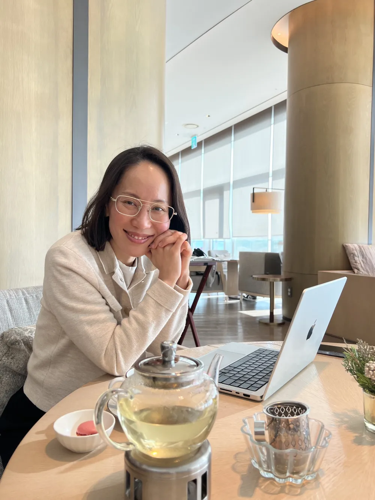

★★★★★
막막했던 결혼·잔고 → 관계와 기회가 달라짐 🕊️
특히 남편과의 관계는 거의 불가능하게 느껴졌어요. 도망갈수도 없는 현실에 갇힌 느낌… 돈은 거의 바닥이었고 희망이 없었어요. → 특히 남편과의 관계가 결혼생활을 통틀어 가장 좋아졌습니다. 현실은 크게 달라지지 않았지만, 관계의 모든 것이 달라졌습니다. 돈도 충분히 필요한 만큼 자꾸 생기는 기회가 많아졌습니다.
김00 (교사, 40대)
책을 수십 권, 어쩌면 180권 이상 읽었어요.
명상도 해봤고, 내면아이 치유, 심리상담도 받아봤어요.
사주, 타로… 다 해봤어요.
그런데 정작
내가 진짜 원하는 삶을 선택해야 하는 순간엔…
또 몸이 멈춰버려요.
머리로는 알아요.
‘나를 사랑해야 한다’는 것도,
‘제한적 믿음을 바꿔야 한다’는 것도,
‘잠재의식을 재프로그래밍해야 한다’는 것도.
왜 열심히 해도 안 바뀔까요
다시 말해서 — 내가 의식적으로 계획하고, 다짐하는 그 5%만으로는 나머지 95%의 무의식적 프로그램을 이길 수 없어요.
그래서 매일 아침 긍정확언을 100번씩 써도, 내 몸이 받아들이지 못하는 확언은 현실이 되기 어려워요. '머리로는 아는데 몸이 안 움직여' — 바로 이 이유예요.
무의식과 의식 사이에 배틀이 붙으면,
언제나 무의식이 이겨요.
우리가 흔히 알고 있는 변화의 방향은 한 가지예요 — 더 생산적으로 사는 것.
아침 루틴을 바꾸고, 더 많은 목표를 세우고, 자격증을 하나 더 따고…
하지만 이건 '더 나은 머신’이 되는 법이지, '진짜 나'로 사는 법이 아니에요.
과한 애씀은 늘어나는데, 삶은 그대로인 이유예요.
이들이 하나의 흐름으로 이어질 때, 내가 원하는 현실도 비로소 따라오기 시작해요.
새로운 변화 방식
내성만방은 의식 수준의 인지와 의지만으로는 닿기 어려운, 무의식과 신경계 차원의 변화에서 시작해요.
‘자기 증명’이 아니라 ‘자기 가치’에서 출발하는 변화의 여정
그때 변화는 가능이 아니라, ‘필연’이 될 거예요.
막막했던 결혼·잔고 → 관계와 기회가 달라짐 🕊️
특히 남편과의 관계는 거의 불가능하게 느껴졌어요. 도망갈수도 없는 현실에 갇힌 느낌… 돈은 거의 바닥이었고 희망이 없었어요. → 특히 남편과의 관계가 결혼생활을 통틀어 가장 좋아졌습니다. 현실은 크게 달라지지 않았지만, 관계의 모든 것이 달라졌습니다. 돈도 충분히 필요한 만큼 자꾸 생기는 기회가 많아졌습니다.
김00 (교사, 40대)
'인생 붕괴의 위기' → 되찾은 용기 🌅
내성만방 프로그램에 참여하기 직전, 저는 '인생 붕괴의 위기'에 처해 있었습니다. 일, 인간 관계, 몸과 정신 건강, 그 모든 것이 툭 건드리기만 해도 쓰러질 것만 같았습니다. → 잃어버렸던 용기를 되찾고 원하는 삶으로 나아갈 힘을 얻은 것만으로도, 저에게는 그 무엇보다도 귀중한 보물 같은 경험이었습니다.
김00 (프리랜서, 40대)
책 180권에도 제자리 → 몇 년 미룬 퇴사 결심 ⛓️💥
'이렇게까지 했는데도 바뀌는 게 없으면 이제 그냥 받아들이고 살자.' 내성만방이 스스로에게 주는 마지막 기회였던 셈이죠. → 가장 놀랍고 예상 밖이었던 변화는, 몇 년 동안 고민만 하던 퇴사를 결심한 것이에요. 이제는 언젠가 넘어지더라도 다시 일어설 수 있고, 스스로를 지탱할 힘이 제 안에 있다는 것을 믿어요.
이00 (직장인, 30대)

뉴로사이언스, 무의식, 감정 패턴에 대한 탐구와 경험을 바탕으로, 한국 여성들이 ‘자기 증명’ 대신 ‘높은 자기 가치감’에 기반한 풍요의 삶을 만들도록 돕고 있어요.
왜냐하면 진짜 내가 원하는 삶은 나를 몰아붙여 얻어내는 것이 아니라, 내 가치가 이미 충분하다는 감각 위에서 만들어갈 때 더 지속가능하고 깊은 만족으로 이어진다는 것을 깨달았기 때문이에요.
호주에서 친구들이 저를 뭐라고 불렀는지 아세요?
DOER — 어떤 일이든 결국 결과로 만드는 사람.
그러니 얼마나 열심히 살았겠어요. 갓생의 삶이었죠. 목표를 세우면 해냈고, 큰 성과도 많이 만들었어요. 그런데 해낼수록 더 편안해지는 게 아니라, 여전히 불안했고 오히려 더 지쳐갔어요.
제가 지나온 변화의 과정:
잠시라도 멈추면 뒤처질 것 같고, 쉬면 내 가치가 하락하는 것 같았어요. 번아웃도 여러 번 겪었죠. 남들이 보기엔 잘해내는 사람이었지만, 행복하지 않았어요.
2011년에 시작한 자기계발 여정의 첫 10년은 솔직히, 나 자신과 내 삶을 빨리 바꾸고 싶어서 더 좋은 생각, 더 강한 의지, 더 효율적인 습관을 끊임없이 찾아 헤매던 시간이었어요. — 하지만 답은 ‘더 생산적으로 사는 법’이 아니었어요.
머리로는 이미 많은 것을 알고 있었지만, 내 감정과 신경계는 여전히 불안했고, 무의식 속 오래된 패턴은 저를 다시 과잉 노력과 자기 증명으로 데려갔어요.
그래서 저는 제 안의 성취 지향적 성향과 그 불균형을 오랫동안 관찰하고 실험할 수밖에 없었어요 — 제가 살아야 했으니까요. 왜 어떤 변화는 결심한 지 며칠 만에 원래대로 돌아가고, 어떤 변화는 삶의 방식 자체를 바꿔놓는지.
그 과정에서 발견한 건, 지속되는 변화는 나를 더 몰아붙이는 데서 오지 않는다는 것이었어요.
내 신경계가 안전을 반복적으로 경험하고, 감정 패턴과 무의식의 믿음이 달라질 때, 비로소 내가 이미 알고 있는 것을 살아낼 수 있게 된다는 것.
그렇게 제 삶과 많은 여성들의 변화 속에서 탄생한 것이 High Self-Worth Method™입니다.
성공이 ‘자기 증명의 수단’이었던 삶에서, ‘나다움의 아름다운 표현’이 되는 삶으로.
과한 애씀 대신 단단한 여유에서 오는 힘으로,
삶·사랑·성공·풍요를 작품처럼 창조하는 여성 — 라이프 아티스트™
내성만방은 그 여정의 시작이에요.
누구에게나 가능해요. 하지만 모두가 그 길을 선택하지는 않아요. 원리는 단순해 보이지만, 늘 쉬운 여정도 아니에요.
하지만 무엇보다 가치 있는 여정이에요.
변화를 이끄는 커리큘럼
내성만방은 오래된 패턴과 스스로 설정한 한계를 넘어, 내가 원하는 삶을 선택하고 살아낼 수 있도록 돕는 12주간의 심층 경험 프로그램입니다.
단순히 듣기 좋은 정보를 배우는 것이 아니라, 신경과학·심리학·영성적 지혜를 바탕으로 배움을 실제 삶의 변화로 연결합니다.
STEP 1 · WEEK 1–2
“나는 왜 알면서도 다시 원래대로 돌아갈까?”
의지 부족이 아니라, 내 몸과 마음이 익숙한 패턴으로 돌아가는 이유를 이해합니다.
그리고 변화의 과정을 버틸 수 있는 안전한 기반을 만들어요.
그래서 — 반복되는 동기부여가 아니라, 지속되는 변화의 토대가 생겨요.
STEP 2 · WEEK 3–4
사회나 타인의 기준이 아니라, 내가 진짜 원하는 삶과 선택의 기준을 다시 세웁니다.
결핍과 조급함이 아닌, 무한한 가능성의 에너지에서 나만의 큰 그림을 그리기 시작해요.
그래서 — 무엇에 집중해야 할지, 지금 잘 가고 있는지 확신이 생겨요.
STEP 3 · WEEK 5–9
나를 멈추게 해온 믿음과 감정, 오래된 패턴을 더 이상 분석하는 데서 멈추지 않습니다.
회피해온 감정을 안전하게 만나고 통합할 때, 머리로만 알던 변화가 몸에서 시작돼요.
그래서 — 몇 년 미뤄온 그 결정 앞에서, 드디어 몸이 움직이기 시작해요.
STEP 4 · WEEK 10–12
인사이트가 ‘좋은 생각’만으로 남지 않고, 새로운 선택과 결정으로 이어집니다.
12주 여정을 넘어, 변화를 내 삶에 정착시키는 힘을 갖춰요.
그래서 — 프로그램이 끝난 뒤에도, 스스로 변화를 지속할 수 있어요.
안전감 없이 깊은 감정을 다루면 버거워지고, 방향 없이 치유만 하면 삶은 달라지지 않아요. 내성만방은 이해에서 끝나지 않고, 느끼고, 통합하고, 선택하는 삶으로 이어지도록 설계되었습니다.
영상 후기
내성만방 졸업생들의 진솔한 이야기를 들어보세요.
김소희 · 직장인
늘 남과 비교하며 불안했고, 사랑받지 못할까 봐 관계 속에서 지쳤어요. 지금은 관계에 집착하지 않아도, 언제든 나와 맞는 사람들을 만날 수 있다는 안정감이 있어요. 무엇보다 ‘나는 내 삶을 창조하는 사람’이라는 걸 진짜 믿게 됐어요.
인터뷰 전체 보기 ↗조혜주 · 요가 지도자
5년 사귄 남자친구와 헤어진 뒤, 사주와 타로에 기대며 답을 찾던 때가 있었어요. 내 안의 패턴을 마주하고 바꾸며, 이제는 내 삶의 답을 내가 선택해요. 그 과정에서 소울메이트와 결혼했고, 상담사 일을 내려놓은 뒤 요가 지도자의 길을 걷고 있어요.
인터뷰 전체 보기 ↗김이경 · 초등학교 교사
책임감으로 겨우 사는 인생이라고 느꼈어요. 깊은 슬픔과 외로움에 쌓여 있었죠. 지금은 아픔과 힘듦이 더 이상 없어요. 결혼 13년 차에 남편과 가장 깊고 좋은 관계를 살고 있고, 아이들도 훨씬 더 밝고 편안해졌어요.
인터뷰 전체 보기 ↗잔고 $1,000에서 → 간호학 석사 과정으로 🎓
처음엔 학비를 어떻게 낼지 너무너무 걱정됐어요. 그런데… 일이 아주 쉽게 구해졌고, 학교 측에서 석사 과정으로 입학시켜주겠다고 연락이 왔어요. 학비도 약 5천만 원 아낄 수 있게 되었고요. 내성만방 수업료 이상 충분히 뽑아낼 것 같아요 ㅋㅋㅋ 감사해요
김00 (호주 유학생, 30대)
수업 후 세운 비전 → 현실화 🎬
장편독립영화캐스팅, 연극주인공캐스팅, 단편영화 촬영완료 — 이렇게 변화가 찾아왔어요. 정말 신기하게 제가 애슐리님과 수업(내성만방)이 끝나고 설정해 뒀던 비전들이에요...
이00 (배우, 30대)
설명할 수 없던 몸의 긴장 → 어느 날 멈춤 🌿
원인을 알 수 없는 몸의 이상 반응이 어느 날부터 멈췄어요! 약도 안 먹고 있는데… 너무 신기해요!
이00 (직장인, 30대)
프로그램 구성
각 구성은 High Self-Worth Method™의 하나의 흐름 안에서, 통찰을 삶의 변화로 연결하도록 설계되어 있습니다.
High Self-Worth Method™의 4단계를 따라 오래된 패턴을 이해하고 내려놓으며, 새로운 선택과 행동의 기반을 만들어갑니다. 모듈은 매주 하나씩 순차적으로 열리며, 녹화본으로 내 속도에 맞춰 반복하고 적용할 수 있어요.
격주 토요일 오전 10시, 배운 내용을 삶에 적용하는 라이브 코칭이 진행됩니다. 질문·감정·패턴·선택의 순간을 가져오면 지금 내 상황에 맞게 함께 풀어드립니다. 오프닝 라이브 포함, 총 7번 라이브로 만나요.
배운 내용을 일상의 선택과 행동으로 연결해, 변화가 실제 삶에 자리 잡도록 돕습니다.
안전한 공간에서, 12주 동안 막히는 지점부터 소중한 깨달음, 함께 축하하고 싶은 변화까지 나누며 함께 나아갑니다. 더 이상 혼자 버틸 필요 없어요! 🙂
12주가 끝난 후에도 필요한 순간마다 돌아와, 내 페이스에 맞춰 복습하고 깊이 있게 체화할 수 있어요.
투자에 대해
내성만방이 12주 만에 당신의 모든 것을 바꿔준다고 말하지 않을게요.
하지만 이 여정을 통해 오래된 패턴을 단계적으로 내려놓으며, 감정에 휩쓸리던 순간에 다르게 반응하고, 나를 믿는 선택을 작게라도 해내간다면 — 그 경험은 내 삶 속에 자리 잡게 돼요.
그 선택이 삶 속에서 반복될수록, 그것은 단순한 인사이트가 아니라 나를 이끄는 새로운 기준이자 자기 가치감과 정체성이 됩니다.
지난 몇 년 동안 같은 고민을 반복하며 강의, 상담, 그리고 감정에 쓴 시간과 비용을 떠올려보세요.
만약 앞으로도 같은 패턴 속에서 나를 의심하고, 미루고, 작은 선택 앞에서 흔들린다면 — 그 대가는 얼마일까요?
내성만방은 그 굴레를 끊는 투자예요.
올해에 있어서, 제 인생에 있어서 제일 큰 ROI가 이 코칭을 들은 것이 될것임을 확신해요!
시작 전엔 비싼듯 느껴졌지만, 끝나고 나니 “와 이래서 이 정도 비용이 드는구나” 싶음! 아깝지 않음
처음에 내성만방을 신청할 때, 의심이 되게 많았어요... '고민한 시간이 아깝다'라는 생각이 들 정도로 얻은 게 정말 컸어요.
등록 안내
지금은 내성만방 다음 기수를 준비하고 있어요.
대기리스트에 등록하시면, 다음 기수 오픈 소식과 대기자 우선 안내를 가장 먼저 받아보실 수 있어요 💌
NSMB WAITLIST
ENROLL NOW
12개 심층 모듈 · 격주 라이브 그룹 코칭 · 주간 통합 과제 · 비공개 커뮤니티 · 녹화본 + 자료 1년 이용
14일 전액 환불 보장 · 환불정책
부담 없이 시작하세요
내성만방의 참여가 당신에게 현명한 선택이자 큰 배움의 기회이길 바랍니다.
프로그램에 성실히 참여해본 후 결정하실 수 있도록 14일 전액 환불 보장을 제공합니다. 프로그램 시작 후 14일 이내에 내성만방이 나에게 맞지 않는다고 느끼신다면, 전액 환불을 요청하실 수 있습니다.
이러한 취지에 따라, 이 보장은 첫 14일 동안 오픈되는 2개의 모듈을 수강하고 해당 과제를 성실히 완료하며, 라이브 세션에 실제로 참여하신 경우에 한해 적용됩니다.
환불 요청은 9월 20일 일요일 오후 11시 59분(KST)까지 이메일로 완료한 과제 증빙 자료와 함께 제출해주세요.
*14일 이후 또는 보장 조건에 해당하지 않는 경우에는 기본 환불 정책에 따라 처리됩니다.
오랜 시간 비슷한 패턴을 반복하며 상담도 받아보고, 많은 책을 읽으며 저를 이해하려 애썼거든요. 분명 마이너스에서 0까지는 가까스로 올라온 것 같았지만, 그 이상 앞으로 나아가지는 못했어요. 오히려 “여기서 내가 뭘 얼마나 더 해야 하지?”라는 마음으로 점점 지쳐가고 있었습니다. 내성만방은 그런 저 자신에게 주는 마지막 기회였어요.
오랜 시간 비슷한 패턴을 반복하며 심리상담도 받아보고, 많은 책을 읽으며 저를 분석하는 데 시간과 에너지를 많이 썼어요. 분명 마이너스에서 0까지는 가까스로 올라왔지만, 그 이상 앞으로 나아가지는 못했어요. 오히려 ‘여기서 내가 뭘 어떻게, 얼마나 더…?’라는 자조적인 태도로 조금씩 기울고 있을 쯤, 내성만방을 만났습니다.
가장 놀랍고 큰 변화는, 몇 년 동안 고민만 하던 퇴사를 결심한 것이에요. 퇴사는 너무나 하고 싶었지만, 제 발로 회사를 나가는 것이 무서워서 “차라리 회사에서 나를 내쫓았으면 좋겠다”라고 생각할 정도였어요.
이제는 저를 있는 그대로 바라보며 조금씩 자유로워지고 있어요. 억눌러왔던 진짜 욕구를 발견했고, 나를 감추는 데 쓰던 에너지 대신 저를 솔직하게 표현하는 데 집중하기 시작했습니다. 그러자 타인을 바라보는 마음도 한결 편안해졌어요.
몇 개월의 코칭으로 사람이 바뀔 수 있을까?라는 의심은, 제가 변화하고 있음을 느끼는 순간 가볍게 날아갔습니다. 깨우침을 주셔서, 그리고 용기를 주셔서 감사합니다!
이00 (직장인, 30대)
자기계발 전전 → 뿌리까지 치유 🌱
그동안 여러 자기계발, 배움, 코칭을 통해 저의 변화를 위해 힘써왔지만, 그럼에도 채워지지 않는 내면의 갈증이 있었습니다. 무언가가 항상 저를 가로막았어요… 내성만방에서 저의 모든 모습과 뿌리 깊은 아픔까지 마주하며, 비로소 스스로 치유할 수 있었습니다. 나는 잘못된 것이 없는 완전한 존재임을 깊이 깨닫게 되었어요.
이00 (배우/프로듀서, 30대)
동기부여의 한계 → 본질적인 변화 🔍
단순히 동기부여와 마인드셋의 문제가 아닌 진짜 본질적인 변화를 불러올 수 있게 하는 법을 배웠어요.
유00 (프리랜서, 30대)
알던 문제 너머 → 삶의 궤적이 달라짐 📈
능력있는 코치와 함께 탐구하면, 내가 알던 문제 그 이상이 풀립니다. 나의 삶에 생각치도 못한 부분이 보이게 되고 결과적으로 삶의 궤적이 달라지게 됩니다.
최00 (코치, 30대)
심리상담은 과거의 경험을 이해하고 언어화하는 데 도움을 줍니다.
일반적인 자기계발 코칭은 목표를 설정하고, 전략과 행동을 만들어가는 데 집중합니다.
내성만방은 그 사이의 공간을 다룹니다. 왜 알면서도 행동으로 옮기기 어려운지, 반복되는 패턴과 감정적 반응을 알아차리고 새로운 선택으로 연결하는 과정입니다.
신경과학 기반의 신경계 안정화 작업, 감정 패턴의 전환, 잠재의식 재프로그래밍을 통해 이해에만 머물지 않고 실제 삶에서 다르게 느끼고 행동할 수 있도록 돕습니다. 또한 구체적이고 체계적인 실천 과정으로 안내합니다.
심리상담을 받고 계신 분도 함께 참여하실 수 있습니다.
그 마음을 깊이 이해해요. 이미 책, 상담, 프로그램에 시간과 돈을 많이 쓴 분이라면 더 그럴 수 있습니다.
내성만방이 모든 사람에게 같은 결과를 약속할 수는 없어요. 다만 이 과정은 정보를 더 쌓는 대신, 반복되는 감정 반응과 선택의 패턴을 12주 동안 구조적으로 탐색하고 새로운 패턴을 연습하도록 설계되어 있습니다.
수강생들이 가장 자주 말하는 변화도 “갑자기 완벽해졌다”가 아니라, “왜 내가 멈추는지 알게 됐고, 전에는 하지 못했던 선택을 시작하게 됐다”는 것이에요.
실제로 한 졸업생은 180권이 넘는 책을 읽고 상담도 받아본 뒤, “이렇게까지 했는데도 바뀌지 않으면 이제 그냥 받아들이고 살자”는 마음으로 신청했다고 해요. 그리고 12주 후, 7년 이상 망설였던 퇴사를 결심했습니다.
이미 많은 것을 해봤는데도 반복되는 패턴이 남아 있다면, 더 많은 정보보다 나의 잠재의식과 신경계 반응을 다루는 새로운 접근이 도움이 될 수 있어요.
물론 혼자서도 할 수 있어요. 실제로 이 페이지를 읽고 있는 당신도 이미 오랫동안 혼자 많은 것을 해내온 분일 거예요.
다만 혼자 작업할 때는 내가 반복하는 패턴을 알고 있어도, 정작 중요한 순간에는 놓치기 쉬워요. 그래서 늘 이해는 깊어지지만, 삶은 같은 자리에서 맴돌게 돼요.
내성만방은 더 많은 정보를 제공하는 과정이 아닙니다. 순서 있는 구조, 직접 그 과정을 통과해온 코치의 관점, 라이브 코칭, 그리고 매주 실제 삶에 적용하는 과제를 통해 변화가 일상으로 이어질 수 있는 실행의 모멘텀을 만듭니다.
혼자 해내는 데 한계를 느끼거나, 이제는 아는 것을 실제 변화로 연결하고 싶은 분에게 맞는 과정입니다.
괜찮아요. 핵심 커리큘럼은 모두 녹화본으로 제공되기 때문에, 내 페이스에 맞춰 따라갈 수 있어요.
라이브 그룹 코칭은 격주로 총 6회 진행되며, 실시간 참여가 어려운 경우에도 녹화본으로 다시 볼 수 있어요. 모든 녹화본과 자료는 1년간 이용할 수 있습니다.
총 12개의 심층 모듈을 내 일정과 페이스에 맞춰 따라갈 수 있어요. 각 모듈은 약 60분 정도로 구성되어 있습니다.
격주로 진행되는 라이브 그룹 코칭 세션에서는 모듈을 진행하며 생긴 질문을 나누고, 필요한 부분에 대해 코칭을 받을 수 있어요.
라이브 세션 전체 일정은 결제 후 발송되는 온보딩 이메일을 통해 안내해 드립니다.
각 모듈에는 실천 과제가 포함되어 있으며, 과제를 위한 시간으로 매주 약 1시간을 확보하시는 것을 권장해요.
아니에요.
내성만방은 의료적 진단이나 치료를 대체하지 않는 교육 과정입니다. 현재 의료적 또는 정신건강 관련 치료가 필요한 경우, 담당 전문가와 먼저 상담해 주세요.
프로그램에 성실히 참여해본 후 결정하실 수 있도록 14일 전액 환불 보장을 제공합니다. 프로그램 시작 후 14일 이내에 내성만방이 나에게 맞지 않는다고 느끼신다면 전액 환불을 요청하실 수 있습니다.
이러한 취지에 따라, 이 보장은 첫 14일 동안 오픈되는 2개의 모듈을 수강하고 해당 과제를 성실히 완료하며, 라이브 세션에 실제로 참여하신 경우에 한해 적용됩니다.
환불 요청은 9월 20일 일요일 오후 11시 59분(KST)까지 이메일로 완료한 과제 증빙 자료와 함께 제출해주세요.
14일 이후 또는 보장 조건에 해당하지 않는 경우에는 기본 환불 정책에 따라 처리됩니다.
내성만방 구매 시, 결제 시점에 내성만방의 환불 정책을 확인하고 동의하신 것으로 간주됩니다.
더 궁금한 점이 있다면 hello@ashleylim.com 으로 문의해주세요.
적용은 막막 → 인생의 마스터 키🔑
자기계발과 마음공부에 관심이 많아 책과 유튜브를 찾아봤지만, 그때그때 위안이나 깨달음을 얻을 뿐 삶에 어떻게 적용해야 할지는 늘 막막했어요. … 내성만방을 통해 어렴풋이 알던 것들을 체계적으로 이해하고, 지속적인 변화를 만드는 방법을 배웠습니다. 정말 “인생의 마스터 키를 쥔 기분”이에요.
유00 (프리랜서, 30대)
수강생 후기
"그냥 강의가 아니에요, 제겐 바이블이에요."
권00 (음악 교사, 30대)
내가 원하는 사람이 분명 있을것이라는 마음으로 목록을 작성하였고, 이후 적었던 분과 똑같은 사람이 제 삶에 나타났습니다. … 안정적인 연애 중이며, 남자친구 부모님을 1월에 뵙기로 하였습니다 🙂
↓
이번 내성만방은 내게 두 번째 내성만방이었다. 지난 첫번째 내성만방을 통해 내가 원하는 삶인 소울메이트를 만나게 되었고, 실제로 결혼식을 앞두고 있다. … '소울메이트&사랑에 대한 챕터를 다시 잘 썼으니, 이제는 커리어에 대한 내 내면을 잘 봐야한다'는 것을 알고 있었다.
조혜주 (요가 지도자, 30대)
모든게 아이의 문제라고만 생각했다... 내성만방의 단계들을 거쳐서 내 안에 많은 슬픔과 아픔을 알 수 있었고 그것을 인정해주고 토닥거려주니 내면의 변화가 생겼다.
몸에서부터의 변화가 시작이었다. 다음으로는 아이를 대하는 내가 달라졌다. 나의 안정감에 아이도 안정감을 찾는게 눈에 보였다. 지금은 아이와 서로 아낌없이 사랑을 표현하며 매일을 보내고 있다.
육아문제가 아니더라도 불안, 두려움, 반복되는 트리거(분노, 좌절, 슬픔 등)로 힘들어하고 있다면 꼭 내성만방 수업을 듣기를 추천합니다. 내성만방 수업을 통해 내가 얼마나 소중하고 가치있는 사람인지 알게되고, 내가 원하는 것을 이룰 수 있는 파워를 가지게 되는 경험을 해보셨으면 좋겠습니다.
서00 (주부, 40대)
내성만방을 시작하기 전에도 변화와 성공을 위해 할 수 있는 시도는 거의 다 해본 느낌이었다. 끌어당김을 위한 100번 쓰기, 시각화, 긍정확언, 미래일기 쓰기 등등. 그런데 하면 할수록 ‘내가 너무 폭력적인데?’라는 생각이 들었다. '드디어 알았다'는 방법들을 시도할 때마다, 감정은 다른 신호를 보내고 있었다.
내성만방을 통해 진정한 변화는 환경이나 행동을 바꾸는 데서 시작되는 것이 아니라, 내가 누구인지를 알고 나의 가치와 믿음을 돌아보는 것에서 시작된다는 것을 알게 되었다. 늘 결핍과 ‘없는 것’에 주의를 두던 내가 아닌, 이미 충분하고 온전한 나를 기억하기로 했다.
감정을 정화하고, 감추고 살았던 부분을 마주하고, 내면아이를 만나는 과정은 내 삶의 오래된 패턴을 이해하게 해주었다. 무의식 속에 있던 믿음을 발견했고, 그 아이를 연민과 사랑으로 돌보며 축복받은 존재로 다시 환영해줄 수 있었다.
이후 친구들과의 만남이나 직장 회의에서도 자연스럽게 뒤로 물러서던 내가, 말하는 속도와 내용까지 조율하며 대화의 중심에 있는 모습을 발견하게 되었다. 마음은 한결 평온해졌고, 관계 안에서는 더 자유롭고 단단한 힘이 생겼다.
나는 상담사이다. 내성만방은 자신뿐 아니라 타인에게도 기여할 수 있게 한다. 나를 온전히 찾는 작업, 잠재의식의 중요성, 감정 정화, 변화의 단계는 상담 장면에서도 충분히 힘을 발휘하고 있다.
천00 (상담사, 50대)
저는 내성만방 시작 전에 정신적인 스트레스가 감당이 안될정도로 심한 상태였고 심리상담이 필요하다고 생각이 들어서 심리상담을 몇번 받아본 뒤 지속하기에는 부족하고 어떻게 해야할까 하는 생각이 들던 중이었습니다.
내성만방 12주라는 시간동안 내 감정에 대한 이해를 할 수 있게 되었고, 그 과정에서 수업이 있다는게 안도감을 주어서 그런지 힘든 일과중이나 일들이 생겨도 수업을 하며 많은 위로를 받기도 하고 해결방법을 찾을 수 있었어요. 저에게 가장 큰 변화는 해결방법을 이해했다 앞으로 이걸 찾기위해 더이상 두려워하거나 방황하지 않을 수 있다는 확신이 생긴거예요
내성만방을 망설이고 있다면, 꼭 하시라고 하고 싶어요. 애슐리님 같은 선생님이 있을까요 생각해봤을때 글쎄요… 이 수업을 받게된건 저에게 행운이 따라주었기 때문이라고 생각합니다.
마지막으로… 애슐리님에게 말씀드렸다시피 기회가 상황이 따라주어야 하겠지만 허락된다면 애슐리님의 수업 지도는 평생 받고 싶어요 얼마나 많은 노력을 하셨을지, 그리도 계속 하실지 조금은 알 것 같아요. 모범이 되어주시고 지도해주심에 감사했습니다!
김00 (직장인, 30대)
저는 마음공부 초심자는 아니었는데도 내성만방을 통해 완전히 새로운 루틴이 잡힌 것 같아서 너무 만족스럽습니다. 내 일상에 확실한 변화를 원한다면 의식적 차원, 무의식적 차원을 함께 다뤄주는 내성만방 프로그램, 정말 강추에요!
장점 1: 짱짱한 커리큘럼
장점 2: 살아있는 지식 -> 삶에 바로 적용 가능!
장점 3: 일주일동안 성장하도록 등떠밀어주는 구체적인 과제들
장점 4: 따뜻하고 통찰력있는 애슐리 코치의 리딩
최00 (코치, 30대)
방향 없던 마음 → 나를 보는 관점의 방향키🧭
내가 원하는 것들을 충분히 이룰 수 있다는 확신을 얻었어요. 막연히 알고 있던 개념들을 삶에 적용하며, 이전보다 더 편안히 호흡하는 저를 만나고 있습니다.
안00 (직장인, 20대)
흐트러진 마음 → 은은한 자신감 💪
진정 강인한 여성이란 무엇인지를 보고 느낄 수 있는 시간이었고, 그래서 제 안의 강인한 나와도 만날 수 있어 소중했습니다.
김00 (직장인, 30대)
불안하고 위태롭던 나 → 태풍에도 단단하게 🌳
불안하고 위태하던 내모습이 지금은 단단하고, 비가 오고 태풍이 와도 잘 견뎌낼 수 있는 자신감·확신·충만함이 생겼습니다
문00 (자영업, 30대)
삶, 사랑, 성공, 풍요가 자기 증명의 수단이 아니라,
나다움의 자연스러운 표현이 되도록.
정보는 차고 넘치지만, 그것을 삶으로 살아내는 법은 체계적으로 배워야 해요. High Self-Worth Method™가 그 깊은 층위의 변화를 함께합니다.
이제부터가 시작이에요 — 라이프 아티스트의 여정으로 들어오세요.